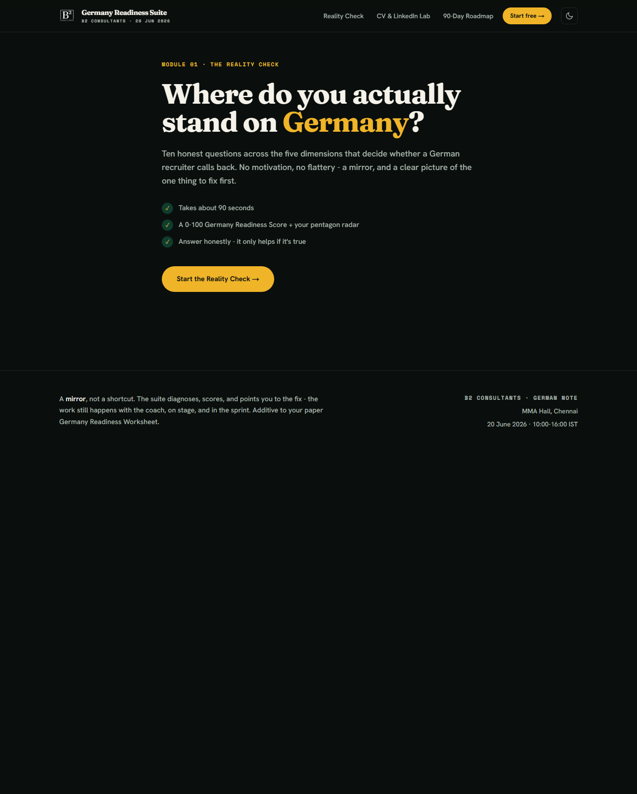
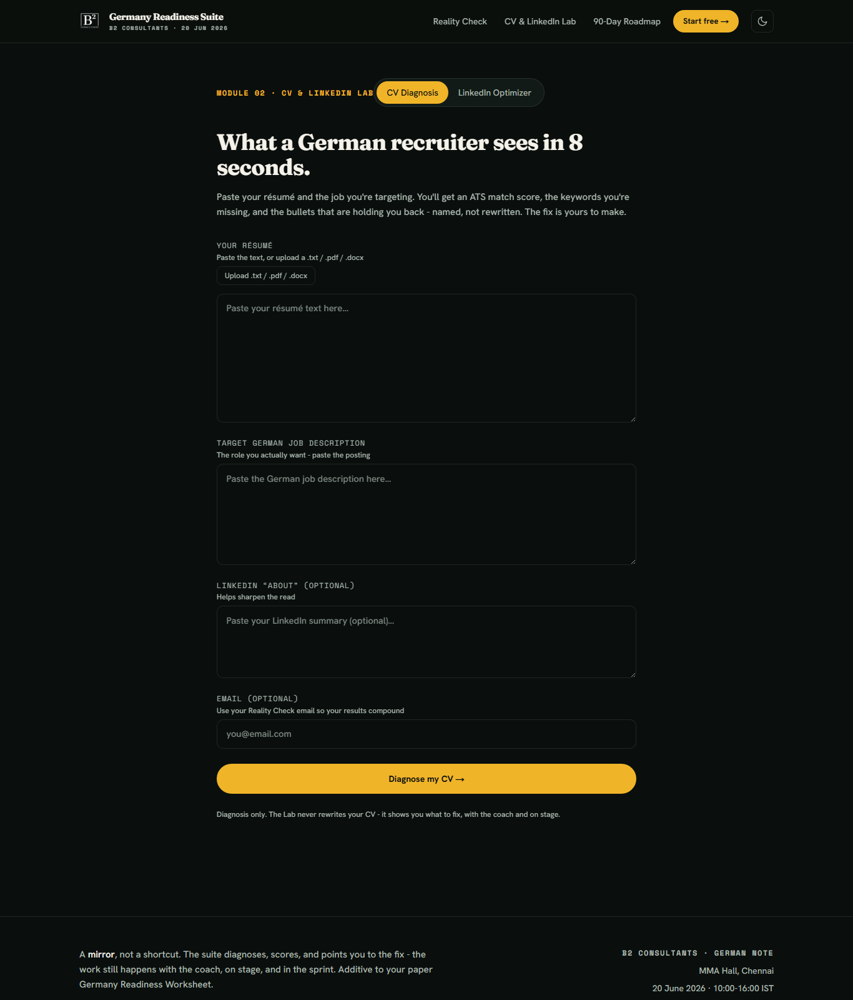
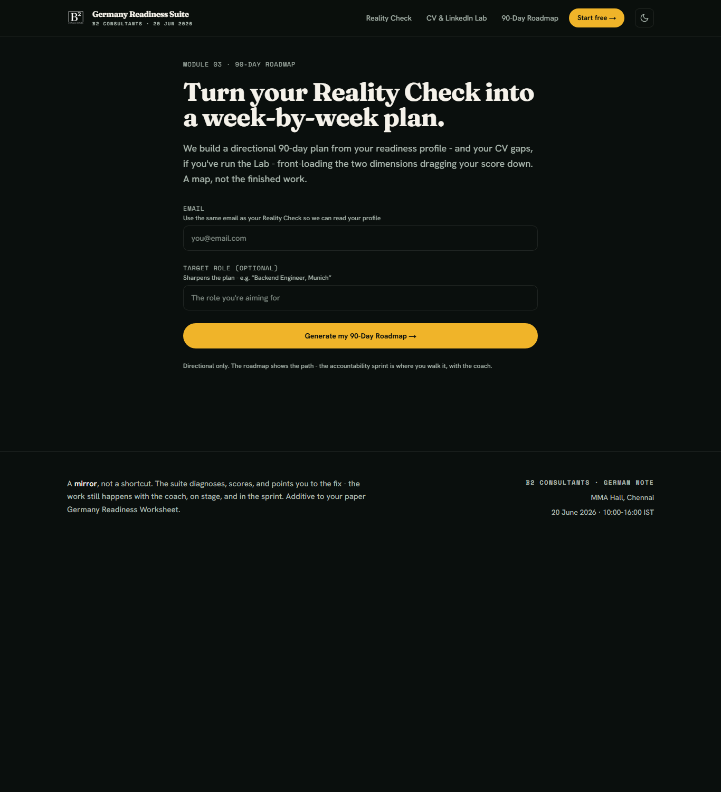
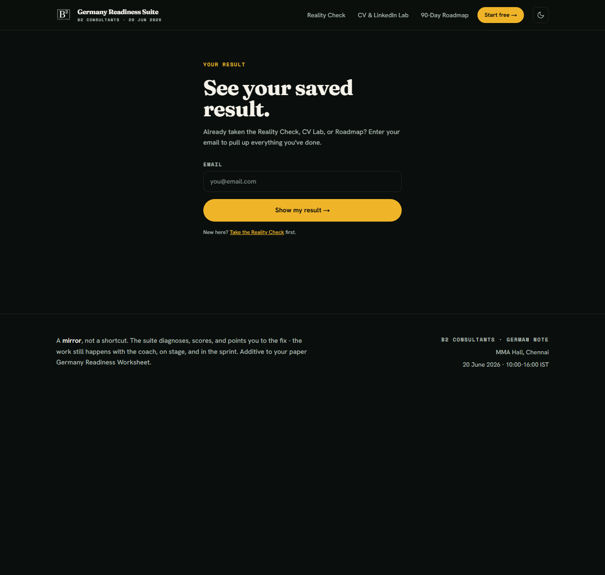

The one-day web app that turns "Am I ready for Germany?" into a real number, a clear gap, and a 90-day plan, then hands the coach a warm conversation. This guide is for Ameen and the team.
The app diagnoses. The coach and the sprint deliver. It never writes a CV or hands over the finished answer. It shows the gap, then points to you. This is by design, and it protects the offer.
The printed Worksheet and 90-Day Visual Roadmap stay. The app only does what paper cannot.



The suite slots into the agenda. It does not add to it.
| Time | Agenda block | What the app powers |
|---|---|---|
| 10:00-12:30 | Reality Check + Live CV Transformation | Reality Check score, the live room screen, and the CV & LinkedIn diagnosis. |
| 12:30-1:30 | Lunch and networking | People retake on arrival, the room screen fills up. |
| 1:30-3:00 | Roadmap Reveal + Success Stories | The 90-Day Roadmap, and the lead-in to the accountability sprint. |
| 3:00-4:00 | Q&A + Personal Action Plan | End-of-day re-score and the score lift across the day on the big screen. |
Free content brings them in. The 999 summit is the front end. The app makes the gap personal and undeniable, which is the natural set-up for the accountability sprint on the back end. When someone is rattled by their score, that is the cue.
Print these on the registration desk and the closing slide. Each one tags its phase on its own.
Open this on the big display during the live blocks. It refreshes on its own.
Your private control room. Every entry shows name, email, phone, session, score, tier, archetype, the modules they finished, and the time in IST.
Set it up once:
Each analysis costs a few US cents. For a 300-person event where people run the CV Lab and the roadmap, budget roughly USD 30 to 60 (about 2,500 to 5,000 rupees), with a buffer. Built-in prompt caching keeps this low.
Keep a small top-up on the account so it never runs dry mid-event. Treat the key like a password.
